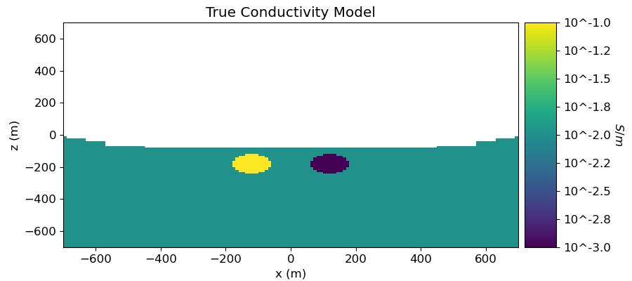
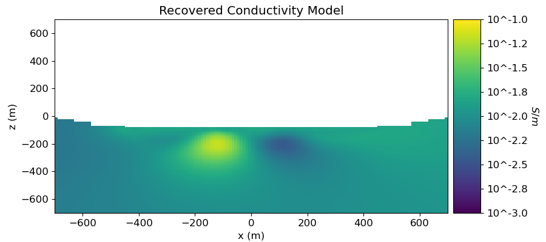
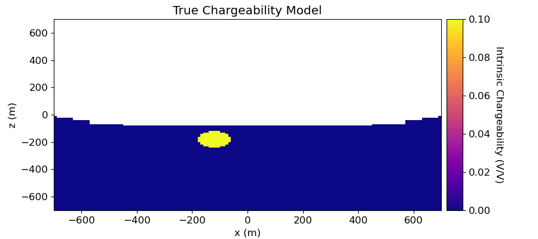
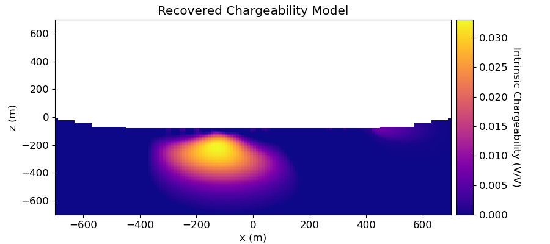

Note
Click here to download the full example code
2.5D DC Resistivity and IP Least-Squares Inversion¶
Here we invert a line of DC resistivity and induced polarization data to recover electrical conductivity and chargeability models, respectively. We formulate the corresponding inverse problems as least-squares optimization problems. For this tutorial, we focus on the following:
Defining the survey
Generating a mesh based on survey geometry
Including surface topography
Defining the inverse problem (data misfit, regularization, directives)
Applying sensitivity weighting
Plotting the recovered model and data misfit
Import modules¶
import os
import numpy as np
import matplotlib as mpl
import matplotlib.pyplot as plt
import tarfile
from discretize import TreeMesh
from discretize.utils import mkvc, refine_tree_xyz
from SimPEG.utils import surface2ind_topo
from SimPEG import (
maps,
data,
data_misfit,
regularization,
optimization,
inverse_problem,
inversion,
directives,
utils,
)
from SimPEG.electromagnetics.static import resistivity as dc
from SimPEG.electromagnetics.static import induced_polarization as ip
from SimPEG.electromagnetics.static.utils.static_utils import plot_pseudoSection
try:
from pymatsolver import Pardiso as Solver
except ImportError:
from SimPEG import SolverLU as Solver
# sphinx_gallery_thumbnail_number = 6
Define File Names¶
Here we provide the file paths to assets we need to run the inversion. The path to the true model conductivity and chargeability models are also provided for comparison with the inversion results. These files are stored as a tar-file on our google cloud bucket: “https://storage.googleapis.com/simpeg/doc-assets/dcip2d.tar.gz”
# storage bucket where we have the data
data_source = "https://storage.googleapis.com/simpeg/doc-assets/dcip2d.tar.gz"
# download the data
downloaded_data = utils.download(data_source, overwrite=True)
# unzip the tarfile
tar = tarfile.open(downloaded_data, "r")
tar.extractall()
tar.close()
# path to the directory containing our data
dir_path = downloaded_data.split(".")[0] + os.path.sep
# files to work with
topo_filename = dir_path + "xyz_topo.txt"
dc_data_filename = dir_path + "dc_data.obs"
ip_data_filename = dir_path + "ip_data.obs"
true_conductivity_filename = dir_path + "true_conductivity.txt"
true_chargeability_filename = dir_path + "true_chargeability.txt"
Out:
Downloading https://storage.googleapis.com/simpeg/doc-assets/dcip2d.tar.gz
saved to: /home/vsts/work/1/s/tutorials/06-ip/dcip2d.tar.gz
Download completed!
Load Data, Define Survey and Plot¶
Here we load the observed data, define the DC and IP survey geometry and plot the data values using pseudo-sections.
# Load data
topo_xyz = np.loadtxt(str(topo_filename))
dobs_dc = np.loadtxt(str(dc_data_filename))
dobs_ip = np.loadtxt(str(ip_data_filename))
# Extract source and receiver electrode locations and the observed data
A_electrodes = dobs_dc[:, 0:2]
B_electrodes = dobs_dc[:, 2:4]
M_electrodes = dobs_dc[:, 4:6]
N_electrodes = dobs_dc[:, 6:8]
dobs_dc = dobs_dc[:, -1]
dobs_ip = dobs_ip[:, -1]
# Define survey
unique_tx, k = np.unique(np.c_[A_electrodes, B_electrodes], axis=0, return_index=True)
n_sources = len(k)
k = np.r_[k, len(A_electrodes) + 1]
source_list = []
for ii in range(0, n_sources):
# MN electrode locations for receivers. Each is an (N, 3) numpy array
M_locations = M_electrodes[k[ii] : k[ii + 1], :]
N_locations = N_electrodes[k[ii] : k[ii + 1], :]
receiver_list = [dc.receivers.Dipole(M_locations, N_locations, data_type="volt")]
# AB electrode locations for source. Each is a (1, 3) numpy array
A_location = A_electrodes[k[ii], :]
B_location = B_electrodes[k[ii], :]
source_list.append(dc.sources.Dipole(receiver_list, A_location, B_location))
# Define survey
dc_survey = dc.survey.Survey_ky(source_list)
ip_survey = ip.from_dc_to_ip_survey(dc_survey, dim="2.5D")
# Define the a data object. Uncertainties are added later
dc_data = data.Data(dc_survey, dobs=dobs_dc)
ip_data = data.Data(ip_survey, dobs=dobs_ip)
# Plot apparent conductivity using pseudo-section
mpl.rcParams.update({"font.size": 12})
fig = plt.figure(figsize=(11, 9))
ax1 = fig.add_axes([0.05, 0.55, 0.8, 0.45])
plot_pseudoSection(
dc_data,
ax=ax1,
survey_type="dipole-dipole",
data_type="appConductivity",
space_type="half-space",
scale="log",
pcolorOpts={"cmap": "viridis"},
)
ax1.set_title("Apparent Conductivity [S/m]")
# Plot apparent chargeability in pseudo-section
apparent_chargeability = ip_data.dobs / dc_data.dobs
ax2 = fig.add_axes([0.05, 0.05, 0.8, 0.45])
plot_pseudoSection(
ip_data,
dobs=apparent_chargeability,
ax=ax2,
survey_type="dipole-dipole",
data_type="appChargeability",
space_type="half-space",
scale="linear",
pcolorOpts={"cmap": "plasma"},
)
ax2.set_title("Apparent Chargeability (V/V)")
plt.show()
Out:
/home/vsts/work/1/s/SimPEG/electromagnetics/static/utils/static_utils.py:468: MatplotlibDeprecationWarning: shading='flat' when X and Y have the same dimensions as C is deprecated since 3.3. Either specify the corners of the quadrilaterals with X and Y, or pass shading='auto', 'nearest' or 'gouraud', or set rcParams['pcolor.shading']. This will become an error two minor releases later.
**pcolor_opts,
/home/vsts/work/1/s/SimPEG/electromagnetics/static/utils/static_utils.py:508: UserWarning: FixedFormatter should only be used together with FixedLocator
ax.set_yticklabels(-ticks / spacing)
Assign Uncertainties¶
Inversion with SimPEG requires that we define standard deviation on our data. This represents our estimate of the noise in our data. For DC data, a relative error is applied to each datum. For this tutorial, the relative error on each datum will be 5%. For IP data, a percent of the DC data is used for the standard deviation. For this tutorial, the standard deviation on IP data are 1% of the corresponding DC data value.
Create OcTree Mesh¶
Here, we create the OcTree mesh that will be used to predict both DC resistivity and IP data.
dh = 10.0 # base cell width
dom_width_x = 2400.0 # domain width x
dom_width_z = 1200.0 # domain width z
nbcx = 2 ** int(np.round(np.log(dom_width_x / dh) / np.log(2.0))) # num. base cells x
nbcz = 2 ** int(np.round(np.log(dom_width_z / dh) / np.log(2.0))) # num. base cells z
# Define the base mesh
hx = [(dh, nbcx)]
hz = [(dh, nbcz)]
mesh = TreeMesh([hx, hz], x0="CN")
# Mesh refinement based on topography
mesh = refine_tree_xyz(
mesh, topo_xyz[:, [0, 2]], octree_levels=[1], method="surface", finalize=False
)
# Mesh refinement near transmitters and receivers
electrode_locations = np.r_[
dc_survey.locations_a,
dc_survey.locations_b,
dc_survey.locations_m,
dc_survey.locations_n,
]
unique_locations = np.unique(electrode_locations, axis=0)
mesh = refine_tree_xyz(
mesh, unique_locations, octree_levels=[2, 4], method="radial", finalize=False
)
# Refine core mesh region
xp, zp = np.meshgrid([-800.0, 800.0], [-800.0, 0.0])
xyz = np.c_[mkvc(xp), mkvc(zp)]
mesh = refine_tree_xyz(mesh, xyz, octree_levels=[0, 2, 2], method="box", finalize=False)
mesh.finalize()
Project Surveys to Discretized Topography¶
It is important that electrodes are not model as being in the air. Even if the electrodes are properly located along surface topography, they may lie above the discretized topography. This step is carried out to ensure all electrodes like on the discretized surface.
# Find cells that lie below surface topography
ind_active = surface2ind_topo(mesh, topo_xyz[:, [0, 2]])
# Shift electrodes to the surface of discretized topography
dc_survey.drape_electrodes_on_topography(mesh, ind_active, option="top")
ip_survey.drape_electrodes_on_topography(mesh, ind_active, option="top")
Starting/Reference Model and Mapping on OcTree Mesh¶
Here, we would create starting and/or reference models for the DC inversion as well as the mapping from the model space to the active cells. Starting and reference models can be a constant background value or contain a-priori structures. Here, the starting model is the natural log of 0.01 S/m.
# Define conductivity model in S/m (or resistivity model in Ohm m)
air_conductivity = np.log(1e-8)
background_conductivity = np.log(1e-2)
active_map = maps.InjectActiveCells(mesh, ind_active, np.exp(air_conductivity))
nC = int(ind_active.sum())
conductivity_map = active_map * maps.ExpMap()
# Define model
starting_conductivity_model = background_conductivity * np.ones(nC)
Define the Physics of the DC Simulation¶
Here, we define the physics of the DC resistivity problem.
# Define the problem. Define the cells below topography and the mapping
dc_simulation = dc.simulation_2d.Simulation2DNodal(
mesh, survey=dc_survey, sigmaMap=conductivity_map, Solver=Solver
)
Define DC Inverse Problem¶
The inverse problem is defined by 3 things:
Data Misfit: a measure of how well our recovered model explains the field data
Regularization: constraints placed on the recovered model and a priori information
Optimization: the numerical approach used to solve the inverse problem
# Define the data misfit. Here the data misfit is the L2 norm of the weighted
# residual between the observed data and the data predicted for a given model.
# Within the data misfit, the residual between predicted and observed data are
# normalized by the data's standard deviation.
dc_data_misfit = data_misfit.L2DataMisfit(data=dc_data, simulation=dc_simulation)
# Define the regularization (model objective function)
dc_regularization = regularization.Simple(
mesh,
indActive=ind_active,
mref=starting_conductivity_model,
alpha_s=0.01,
alpha_x=1,
alpha_y=1,
)
# Define how the optimization problem is solved. Here we will use a projected
# Gauss-Newton approach that employs the conjugate gradient solver.
dc_optimization = optimization.ProjectedGNCG(
maxIter=5, lower=-10.0, upper=2.0, maxIterLS=20, maxIterCG=10, tolCG=1e-3
)
# Here we define the inverse problem that is to be solved
dc_inverse_problem = inverse_problem.BaseInvProblem(
dc_data_misfit, dc_regularization, dc_optimization
)
Define DC Inversion Directives¶
Here we define any directives that are carried out during the inversion. This includes the cooling schedule for the trade-off parameter (beta), stopping criteria for the inversion and saving inversion results at each iteration.
# Apply and update sensitivity weighting as the model updates
update_sensitivity_weighting = directives.UpdateSensitivityWeights()
# Defining a starting value for the trade-off parameter (beta) between the data
# misfit and the regularization.
starting_beta = directives.BetaEstimate_ByEig(beta0_ratio=1e1)
# Set the rate of reduction in trade-off parameter (beta) each time the
# the inverse problem is solved. And set the number of Gauss-Newton iterations
# for each trade-off paramter value.
beta_schedule = directives.BetaSchedule(coolingFactor=5, coolingRate=2)
# Options for outputting recovered models and predicted data for each beta.
save_iteration = directives.SaveOutputEveryIteration(save_txt=False)
# Setting a stopping criteria for the inversion.
target_misfit = directives.TargetMisfit(chifact=1)
directives_list = [
update_sensitivity_weighting,
starting_beta,
beta_schedule,
save_iteration,
target_misfit,
]
Running the DC Inversion¶
To define the inversion object, we need to define the inversion problem and the set of directives. We can then run the inversion.
# Here we combine the inverse problem and the set of directives
dc_inversion = inversion.BaseInversion(
dc_inverse_problem, directiveList=directives_list
)
# Run inversion
recovered_conductivity_model = dc_inversion.run(starting_conductivity_model)
Out:
SimPEG.InvProblem is setting bfgsH0 to the inverse of the eval2Deriv.
***Done using same Solver and solverOpts as the problem***
/usr/share/miniconda/envs/deploy/lib/python3.7/site-packages/discretize/utils/code_utils.py:129: FutureWarning: TreeMesh._aveCC2FxStencil has been deprecated, please use TreeMesh.average_cell_to_total_face_x. It will be removed in version 1.0.0 of discretize.
warnings.warn(message, FutureWarning)
/usr/share/miniconda/envs/deploy/lib/python3.7/site-packages/discretize/utils/code_utils.py:129: FutureWarning: TreeMesh._cellGradxStencil has been deprecated, please use TreeMesh.stencil_cell_gradient_x. It will be removed in version 1.0.0 of discretize.
warnings.warn(message, FutureWarning)
/usr/share/miniconda/envs/deploy/lib/python3.7/site-packages/discretize/utils/code_utils.py:129: FutureWarning: TreeMesh.vol has been deprecated, please use TreeMesh.cell_volumes. It will be removed in version 1.0.0 of discretize.
warnings.warn(message, FutureWarning)
/usr/share/miniconda/envs/deploy/lib/python3.7/site-packages/discretize/utils/code_utils.py:129: FutureWarning: TreeMesh._aveCC2FyStencil has been deprecated, please use TreeMesh.average_cell_to_total_face_y. It will be removed in version 1.0.0 of discretize.
warnings.warn(message, FutureWarning)
/usr/share/miniconda/envs/deploy/lib/python3.7/site-packages/discretize/utils/code_utils.py:129: FutureWarning: TreeMesh._cellGradyStencil has been deprecated, please use TreeMesh.stencil_cell_gradient_y. It will be removed in version 1.0.0 of discretize.
warnings.warn(message, FutureWarning)
/usr/share/miniconda/envs/deploy/lib/python3.7/site-packages/discretize/utils/code_utils.py:157: FutureWarning: TreeMesh.getEdgeInnerProduct has been deprecated, please use TreeMesh.get_edge_inner_product. It will be removed in version 1.0.0 of discretize.
FutureWarning,
/usr/share/miniconda/envs/deploy/lib/python3.7/site-packages/discretize/utils/code_utils.py:129: FutureWarning: TreeMesh.nodalGrad has been deprecated, please use TreeMesh.nodal_gradient. It will be removed in version 1.0.0 of discretize.
warnings.warn(message, FutureWarning)
/usr/share/miniconda/envs/deploy/lib/python3.7/site-packages/discretize/utils/code_utils.py:157: FutureWarning: TreeMesh.getInterpolationMat has been deprecated, please use TreeMesh.get_interpolation_matrix. It will be removed in version 1.0.0 of discretize.
FutureWarning,
/usr/share/miniconda/envs/deploy/lib/python3.7/site-packages/discretize/tree_mesh.py:522: FutureWarning: The locType keyword argument has been deprecated, please use location_type. This will be removed in discretize 1.0.0
FutureWarning,
/usr/share/miniconda/envs/deploy/lib/python3.7/site-packages/discretize/utils/code_utils.py:157: FutureWarning: TreeMesh.getEdgeInnerProductDeriv has been deprecated, please use TreeMesh.get_edge_inner_product_deriv. It will be removed in version 1.0.0 of discretize.
FutureWarning,
model has any nan: 0
=============================== Projected GNCG ===============================
# beta phi_d phi_m f |proj(x-g)-x| LS Comment
-----------------------------------------------------------------------------
x0 has any nan: 0
0 1.03e+04 1.49e+04 0.00e+00 1.49e+04 2.51e+02 0
1 1.03e+04 1.56e+03 1.11e-01 2.70e+03 1.44e+02 0
2 2.05e+03 1.08e+03 1.38e-01 1.37e+03 1.22e+02 0 Skip BFGS
3 2.05e+03 4.18e+02 2.87e-01 1.01e+03 5.79e+01 0
4 4.11e+02 4.15e+02 2.86e-01 5.32e+02 8.65e+01 0
5 4.11e+02 1.46e+02 5.75e-01 3.83e+02 6.38e+01 0
------------------------- STOP! -------------------------
1 : |fc-fOld| = 1.4947e+02 <= tolF*(1+|f0|) = 1.4875e+03
1 : |xc-x_last| = 1.0104e+01 <= tolX*(1+|x0|) = 5.1717e+01
0 : |proj(x-g)-x| = 6.3828e+01 <= tolG = 1.0000e-01
0 : |proj(x-g)-x| = 6.3828e+01 <= 1e3*eps = 1.0000e-02
1 : maxIter = 5 <= iter = 5
------------------------- DONE! -------------------------
Plotting True and Recovered Conductivity Model¶
# Load true conductivity model
true_conductivity_model = np.loadtxt(str(true_conductivity_filename))
true_conductivity_model_log10 = np.log10(true_conductivity_model[ind_active])
# Plot True Model
fig = plt.figure(figsize=(9, 4))
plotting_map = maps.ActiveCells(mesh, ind_active, np.nan)
ax1 = fig.add_axes([0.1, 0.12, 0.72, 0.8])
mesh.plotImage(
plotting_map * true_conductivity_model_log10,
ax=ax1,
grid=False,
clim=(np.min(true_conductivity_model_log10), np.max(true_conductivity_model_log10)),
range_x=[-700, 700],
range_y=[-700, 0],
pcolorOpts={"cmap": "viridis"},
)
ax1.set_title("True Conductivity Model")
ax1.set_xlabel("x (m)")
ax1.set_ylabel("z (m)")
ax2 = fig.add_axes([0.83, 0.12, 0.05, 0.8])
norm = mpl.colors.Normalize(
vmin=np.min(true_conductivity_model_log10),
vmax=np.max(true_conductivity_model_log10),
)
cbar = mpl.colorbar.ColorbarBase(
ax2, norm=norm, orientation="vertical", cmap=mpl.cm.viridis, format="10^%.1f"
)
cbar.set_label("$S/m$", rotation=270, labelpad=15, size=12)
plt.show()
# Plot Recovered Model
fig = plt.figure(figsize=(9, 4))
# Make conductivities in log10
recovered_conductivity_model_log10 = np.log10(np.exp(recovered_conductivity_model))
ax1 = fig.add_axes([0.1, 0.12, 0.72, 0.8])
mesh.plotImage(
plotting_map * recovered_conductivity_model_log10,
normal="Y",
ax=ax1,
grid=False,
clim=(np.min(true_conductivity_model_log10), np.max(true_conductivity_model_log10)),
range_x=[-700, 700],
range_y=[-700, 0],
pcolorOpts={"cmap": "viridis"},
)
ax1.set_title("Recovered Conductivity Model")
ax1.set_xlabel("x (m)")
ax1.set_ylabel("z (m)")
ax2 = fig.add_axes([0.83, 0.12, 0.05, 0.8])
norm = mpl.colors.Normalize(
vmin=np.min(true_conductivity_model_log10),
vmax=np.max(true_conductivity_model_log10),
)
cbar = mpl.colorbar.ColorbarBase(
ax2, norm=norm, orientation="vertical", cmap=mpl.cm.viridis, format="10^%.1f"
)
cbar.set_label("$S/m$", rotation=270, labelpad=15, size=12)
plt.show()
- 
- 
Out:
/usr/share/miniconda/envs/deploy/lib/python3.7/site-packages/discretize/utils/code_utils.py:157: FutureWarning: TreeMesh.plotImage has been deprecated, please use TreeMesh.plot_image. It will be removed in version 1.0.0 of discretize.
FutureWarning,
Plotting Predicted DC Data and Misfit¶
# Predicted data from recovered model
dpred_dc = dc_inverse_problem.dpred
dc_data_predicted = data.Data(dc_survey, dobs=dpred_dc)
data_array = [dc_data, dc_data_predicted, dc_data]
dobs_array = [None, None, (dobs_dc - dpred_dc) / std_dc]
fig = plt.figure(figsize=(17, 5.5))
plot_title = ["Observed", "Predicted", "Normalized Misfit"]
plot_type = ["appConductivity", "appConductivity", "misfitMap"]
plot_units = ["S/m", "S/m", ""]
scale = ["log", "log", "linear"]
ax1 = 3 * [None]
norm = 3 * [None]
cbar = 3 * [None]
cplot = 3 * [None]
for ii in range(0, 3):
ax1[ii] = fig.add_axes([0.33 * ii + 0.03, 0.05, 0.25, 0.9])
cplot[ii] = plot_pseudoSection(
data_array[ii],
dobs=dobs_array[ii],
ax=ax1[ii],
survey_type="dipole-dipole",
data_type=plot_type[ii],
scale=scale[ii],
space_type="half-space",
pcolorOpts={"cmap": "viridis"},
)
ax1[ii].set_title(plot_title[ii])
plt.show()
Out:
/home/vsts/work/1/s/SimPEG/electromagnetics/static/utils/static_utils.py:468: MatplotlibDeprecationWarning: shading='flat' when X and Y have the same dimensions as C is deprecated since 3.3. Either specify the corners of the quadrilaterals with X and Y, or pass shading='auto', 'nearest' or 'gouraud', or set rcParams['pcolor.shading']. This will become an error two minor releases later.
**pcolor_opts,
/home/vsts/work/1/s/SimPEG/electromagnetics/static/utils/static_utils.py:508: UserWarning: FixedFormatter should only be used together with FixedLocator
ax.set_yticklabels(-ticks / spacing)
Starting/Reference Model for IP Inversion¶
Here, we would create starting and/or reference models for the IP inversion as well as the mapping from the model space to the active cells. Starting and reference models can be a constant background value or contain a-priori structures. Here, the starting model is the 1e-6 V/V.
# Define conductivity model in S/m (or resistivity model in Ohm m)
air_chargeability = 0.0
background_chargeability = 1e-6
active_map = maps.InjectActiveCells(mesh, ind_active, air_chargeability)
nC = int(ind_active.sum())
chargeability_map = active_map
# Define model
starting_chargeability_model = background_chargeability * np.ones(nC)
Define the Physics of the IP Simulation¶
Here, we define the physics of the IP problem. For the chargeability, we require a mapping from the model space to the entire mesh. For the background conductivity/resistivity, we require the conductivity/resistivity on the entire mesh.
ip_simulation = ip.simulation_2d.Simulation2DNodal(
mesh,
survey=ip_survey,
etaMap=chargeability_map,
sigma=conductivity_map * recovered_conductivity_model,
Solver=Solver,
)
Define IP Inverse Problem¶
Here we define the inverse problem in the same manner as the DC inverse problem.
# Define the data misfit (Here we use weighted L2-norm)
ip_data_misfit = data_misfit.L2DataMisfit(data=ip_data, simulation=ip_simulation)
# Define the regularization (model objective function)
ip_regularization = regularization.Simple(
mesh,
indActive=ind_active,
mapping=maps.IdentityMap(nP=nC),
alpha_s=1,
alpha_x=1,
alpha_y=1,
)
# Define how the optimization problem is solved.
ip_optimization = optimization.ProjectedGNCG(
maxIter=10, lower=0.0, upper=1.0, maxIterLS=20, maxIterCG=10, tolCG=1e-3
)
# Here we define the inverse problem that is to be solved
ip_inverse_problem = inverse_problem.BaseInvProblem(
ip_data_misfit, ip_regularization, ip_optimization
)
Define IP Inversion Directives¶
Here we define the directives in the same manner as the DC inverse problem.
update_sensitivity_weighting = directives.UpdateSensitivityWeights(threshold=1e-3)
starting_beta = directives.BetaEstimate_ByEig(beta0_ratio=1e2)
beta_schedule = directives.BetaSchedule(coolingFactor=2, coolingRate=1)
save_iteration = directives.SaveOutputEveryIteration(save_txt=False)
target_misfit = directives.TargetMisfit(chifact=1.0)
directives_list = [
update_sensitivity_weighting,
starting_beta,
beta_schedule,
save_iteration,
target_misfit,
]
Define IP Inversion Directives¶
Here we define the directives in the same manner as the DC inverse problem.
# Here we combine the inverse problem and the set of directives
ip_inversion = inversion.BaseInversion(
ip_inverse_problem, directiveList=directives_list
)
# Run inversion
recovered_chargeability_model = ip_inversion.run(starting_chargeability_model)
Out:
SimPEG.InvProblem will set Regularization.mref to m0.
SimPEG.InvProblem is setting bfgsH0 to the inverse of the eval2Deriv.
***Done using same Solver and solverOpts as the problem***
/usr/share/miniconda/envs/deploy/lib/python3.7/site-packages/discretize/utils/code_utils.py:129: FutureWarning: TreeMesh._aveCC2FxStencil has been deprecated, please use TreeMesh.average_cell_to_total_face_x. It will be removed in version 1.0.0 of discretize.
warnings.warn(message, FutureWarning)
/usr/share/miniconda/envs/deploy/lib/python3.7/site-packages/discretize/utils/code_utils.py:129: FutureWarning: TreeMesh._cellGradxStencil has been deprecated, please use TreeMesh.stencil_cell_gradient_x. It will be removed in version 1.0.0 of discretize.
warnings.warn(message, FutureWarning)
/usr/share/miniconda/envs/deploy/lib/python3.7/site-packages/discretize/utils/code_utils.py:129: FutureWarning: TreeMesh.vol has been deprecated, please use TreeMesh.cell_volumes. It will be removed in version 1.0.0 of discretize.
warnings.warn(message, FutureWarning)
/usr/share/miniconda/envs/deploy/lib/python3.7/site-packages/discretize/utils/code_utils.py:129: FutureWarning: TreeMesh._aveCC2FyStencil has been deprecated, please use TreeMesh.average_cell_to_total_face_y. It will be removed in version 1.0.0 of discretize.
warnings.warn(message, FutureWarning)
/usr/share/miniconda/envs/deploy/lib/python3.7/site-packages/discretize/utils/code_utils.py:129: FutureWarning: TreeMesh._cellGradyStencil has been deprecated, please use TreeMesh.stencil_cell_gradient_y. It will be removed in version 1.0.0 of discretize.
warnings.warn(message, FutureWarning)
/usr/share/miniconda/envs/deploy/lib/python3.7/site-packages/discretize/utils/code_utils.py:157: FutureWarning: TreeMesh.getEdgeInnerProduct has been deprecated, please use TreeMesh.get_edge_inner_product. It will be removed in version 1.0.0 of discretize.
FutureWarning,
/usr/share/miniconda/envs/deploy/lib/python3.7/site-packages/discretize/utils/code_utils.py:129: FutureWarning: TreeMesh.nodalGrad has been deprecated, please use TreeMesh.nodal_gradient. It will be removed in version 1.0.0 of discretize.
warnings.warn(message, FutureWarning)
/usr/share/miniconda/envs/deploy/lib/python3.7/site-packages/discretize/utils/code_utils.py:157: FutureWarning: TreeMesh.getInterpolationMat has been deprecated, please use TreeMesh.get_interpolation_matrix. It will be removed in version 1.0.0 of discretize.
FutureWarning,
/usr/share/miniconda/envs/deploy/lib/python3.7/site-packages/discretize/utils/code_utils.py:157: FutureWarning: TreeMesh.getEdgeInnerProductDeriv has been deprecated, please use TreeMesh.get_edge_inner_product_deriv. It will be removed in version 1.0.0 of discretize.
FutureWarning,
model has any nan: 0
=============================== Projected GNCG ===============================
# beta phi_d phi_m f |proj(x-g)-x| LS Comment
-----------------------------------------------------------------------------
x0 has any nan: 0
0 3.07e+05 1.38e+02 0.00e+00 1.38e+02 3.65e+01 0
1 1.53e+05 1.25e+02 1.96e-05 1.28e+02 3.31e+01 0
2 7.67e+04 1.16e+02 7.52e-05 1.21e+02 3.17e+01 0 Skip BFGS
3 3.83e+04 9.91e+01 2.18e-04 1.08e+02 3.15e+01 0
4 1.92e+04 7.61e+01 6.51e-04 8.86e+01 2.96e+01 0 Skip BFGS
5 9.59e+03 5.42e+01 1.46e-03 6.83e+01 2.72e+01 0 Skip BFGS
------------------------- STOP! -------------------------
1 : |fc-fOld| = 0.0000e+00 <= tolF*(1+|f0|) = 1.3894e+01
0 : |xc-x_last| = 2.0968e-01 <= tolX*(1+|x0|) = 1.0001e-01
0 : |proj(x-g)-x| = 2.7141e+01 <= tolG = 1.0000e-01
0 : |proj(x-g)-x| = 2.7141e+01 <= 1e3*eps = 1.0000e-02
0 : maxIter = 10 <= iter = 6
------------------------- DONE! -------------------------
Plotting True Model and Recovered Chargeability Model¶
true_chargeability_model = np.loadtxt(str(true_chargeability_filename))
true_chargeability_model = true_chargeability_model[ind_active]
# Plot True Model
fig = plt.figure(figsize=(9, 4))
plotting_map = maps.ActiveCells(mesh, ind_active, np.nan)
ax1 = fig.add_axes([0.1, 0.12, 0.72, 0.8])
mesh.plotImage(
plotting_map * true_chargeability_model,
ax=ax1,
grid=False,
clim=(np.min(true_chargeability_model), np.max(true_chargeability_model)),
range_x=[-700, 700],
range_y=[-700, 0],
pcolorOpts={"cmap": "plasma"},
)
ax1.set_title("True Chargeability Model")
ax1.set_xlabel("x (m)")
ax1.set_ylabel("z (m)")
ax2 = fig.add_axes([0.83, 0.12, 0.03, 0.8])
norm = mpl.colors.Normalize(
vmin=np.min(true_chargeability_model), vmax=np.max(true_chargeability_model)
)
cbar = mpl.colorbar.ColorbarBase(
ax2, norm=norm, orientation="vertical", cmap=mpl.cm.plasma
)
cbar.set_label("Intrinsic Chargeability (V/V)", rotation=270, labelpad=15, size=12)
plt.show()
# Plot Recovered Model
fig = plt.figure(figsize=(9, 4))
ax1 = fig.add_axes([0.1, 0.12, 0.72, 0.8])
mesh.plotImage(
plotting_map * recovered_chargeability_model,
normal="Y",
ax=ax1,
grid=False,
clim=(np.min(recovered_chargeability_model), np.max(recovered_chargeability_model)),
range_x=[-700, 700],
range_y=[-700, 0],
pcolorOpts={"cmap": "plasma"},
)
ax1.set_title("Recovered Chargeability Model")
ax1.set_xlabel("x (m)")
ax1.set_ylabel("z (m)")
ax2 = fig.add_axes([0.83, 0.12, 0.03, 0.8])
norm = mpl.colors.Normalize(
vmin=np.min(recovered_chargeability_model),
vmax=np.max(recovered_chargeability_model),
)
cbar = mpl.colorbar.ColorbarBase(
ax2, norm=norm, orientation="vertical", cmap=mpl.cm.plasma
)
cbar.set_label("Intrinsic Chargeability (V/V)", rotation=270, labelpad=15, size=12)
plt.show()
- 
- 
Out:
/usr/share/miniconda/envs/deploy/lib/python3.7/site-packages/discretize/utils/code_utils.py:157: FutureWarning: TreeMesh.plotImage has been deprecated, please use TreeMesh.plot_image. It will be removed in version 1.0.0 of discretize.
FutureWarning,
Plotting Predicted Data and Misfit¶
dpred_ip = ip_inverse_problem.dpred
ip_data_predicted = data.Data(ip_survey, dobs=dpred_ip)
# Convert from voltage measurements to apparent chargeability by normalizing by
# the DC voltage
dobs_array = np.c_[dobs_ip / dobs_dc, dpred_ip / dobs_dc, (dobs_ip - dpred_ip) / std_ip]
fig = plt.figure(figsize=(17, 5.5))
plot_title = ["Observed", "Predicted", "Normalized Misfit"]
plot_type = ["appChargeability", "appChargeability", "volt"]
scale = ["linear", "linear", "linear"]
ax1 = 3 * [None]
norm = 3 * [None]
cbar = 3 * [None]
cplot = 3 * [None]
for ii in range(0, 3):
ax1[ii] = fig.add_axes([0.33 * ii + 0.03, 0.11, 0.23, 0.85])
cplot[ii] = plot_pseudoSection(
ip_data,
dobs=dobs_array[:, ii],
ax=ax1[ii],
survey_type="dipole-dipole",
data_type=plot_type[ii],
space_type="half-space",
pcolorOpts={"cmap": "plasma"},
)
ax1[ii].set_title(plot_title[ii])
ax1[ii].set_xlabel("x (m)")
ax1[ii].set_ylabel("z (m)")
plt.show()
Out:
/home/vsts/work/1/s/SimPEG/electromagnetics/static/utils/static_utils.py:468: MatplotlibDeprecationWarning: shading='flat' when X and Y have the same dimensions as C is deprecated since 3.3. Either specify the corners of the quadrilaterals with X and Y, or pass shading='auto', 'nearest' or 'gouraud', or set rcParams['pcolor.shading']. This will become an error two minor releases later.
**pcolor_opts,
/home/vsts/work/1/s/SimPEG/electromagnetics/static/utils/static_utils.py:508: UserWarning: FixedFormatter should only be used together with FixedLocator
ax.set_yticklabels(-ticks / spacing)
Total running time of the script: ( 1 minutes 24.378 seconds)
Estimated memory usage: 9 MB